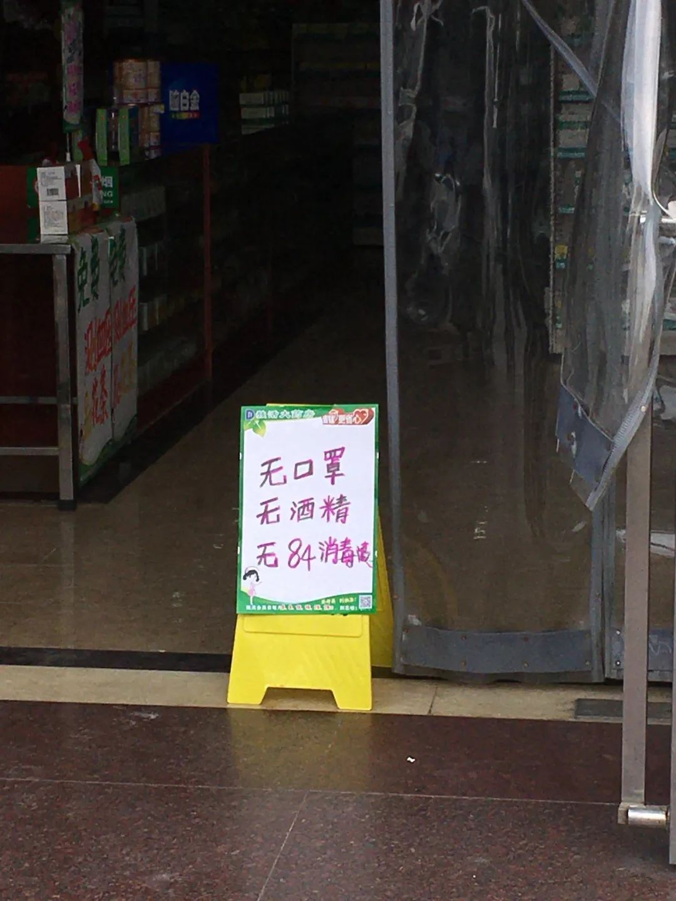
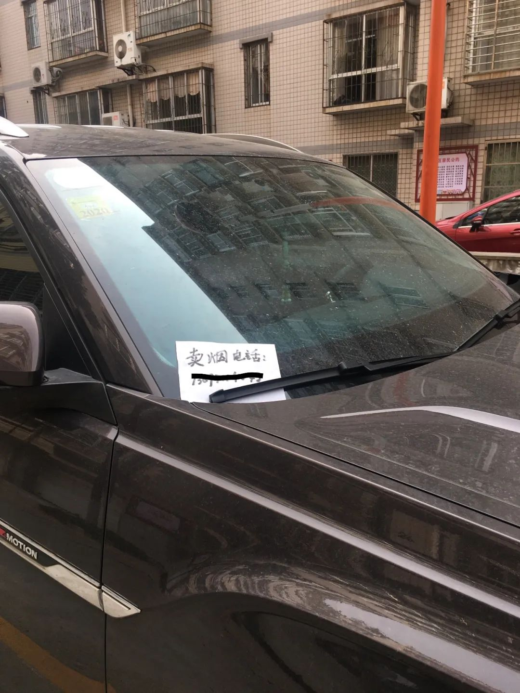
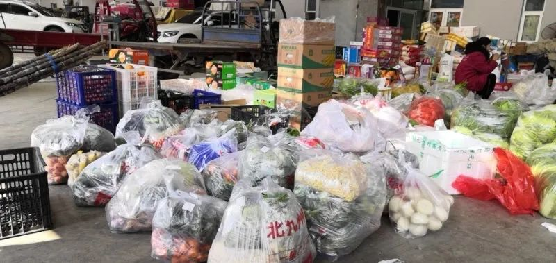

武汉人买菜的真实图景
原文链接 备份链接 他们理解小区被封，理解只能选择被塞了四大包汤圆的团购套餐，理解菜价成倍上涨，理解要继续忍受生活上的不便，才有可能早一点等来结束的一天。 文 | 谢婵 编辑 | 小豆 武汉伢王嘉兴给父母打电话，得知小区业主群里推荐 …


在我家，一直是爸爸负责买菜。在闭门不出的日子里，食物一度成为爸爸最担忧的事情。
他的恐慌在 2 月 7 日小区完全封闭时达到顶峰。那几天，小区里先后确诊了 7 例新冠肺炎患者，还有多例疑似，救护车呜啦呜啦来了好几趟，前前后后拉走了病患和密切接触者。尖锐的警报声让住户们忐忑，小区也由此开始封闭管理 14 天。
 许多小区门前贴着这样的告示，谢绝住户以外的人员到访。之后隔离进一步加强，所有小区的居民不被允许出门，购买生活物质采用统一配送的方式。
许多小区门前贴着这样的告示，谢绝住户以外的人员到访。之后隔离进一步加强，所有小区的居民不被允许出门，购买生活物质采用统一配送的方式。
那是元宵节的前一天。回到疫情刚刚在大众视野中浮出水面的时候，不断有媒体报道称，专家预测元宵节前后将出现拐点，疾病会得到控制。因为截止到元宵节，武汉封城之后的第一个潜伏期结束。正月十五悄然而至，我们却陷入了更深的隔离之中。
患病人数还在不断攀升。瘟疫爆发之后，我们一家养成了每天起床先看通报的习惯。进入二月份，即使是官方数据的涨幅也令人揪心。这一天，我所在的湖北省襄阳市 —— 位于湖北省西北部的一个人口大约为 500 万的城市 —— 通告本市有 838 位确诊病人。
爸爸已经想要出门买菜好几天了，因为无从得知确诊病人的行动路径，我和妈妈极力反对。家里还有食物，不如过几天再看。可疫情越来越严重，2 月 6 号惊慌的爸爸坚持去了菜市场，却发现已经停业。他回来生闷气，然后责备妈妈。谁知几小时之后，妈妈在小区群里看见物业经理说，那间菜市场被紧急关闭，是因为有位去过的老人回家之后感到不适，随后被确诊感染了新冠肺炎。
没有关于那位老人更多更确切的信息了，但大部分人还是选择相信。疫情之后，外面的世界在人们的话语中被描绘为一个危险的地方，小区门口的喇叭每天都在重复：“非必要，不出门。”
 小区内挂起了横幅，喇叭声没有停止过，街道上不停有宣传车播放着通知，声音却很模糊，呆在家里的我从没听清过。
小区内挂起了横幅，喇叭声没有停止过，街道上不停有宣传车播放着通知，声音却很模糊，呆在家里的我从没听清过。
可爸爸将信将疑，他认为这是物业便于小区管理的一种策略，并准备第二天再去稍远一些的武商超市。毕竟没有人知道这样的不能出门的生活什么时候才会结束，囤物资是必要之举。
然而 2 月 7 号一大早出门的爸爸失败得彻彻底底。他在小区门口被保安拦住，对方说小区已经完全封闭，且武商超市也歇业了。爸爸在家里急得团团转，妈妈倒很坦然：现在这个年代怎么会买不到东西吃？愤怒的爸爸大喊：“你一点zz敏感度都没有，你觉得会有人管你饿死吗？”
妈妈觉得爸爸的担忧有些荒诞了。可它并不是没有来由。
2 月 1 号，初八，那天微信群中传言要开始封桥。襄阳由汉江一分为二，形成两个行政区，桥是连接两岸的唯一交通方式。奶奶家住在汉江的另一边。我和爸爸急忙动身去看望爷爷奶奶。街上人很少，有人摘下口罩抽烟，看到有人靠近又赶紧戴上。行人要么是出门采购，要么是在遛狗。我们给爷爷奶奶送了口罩，又拿了些水果和肉回家。当时，全市所有的农贸市场和菜市场已经关闭，只留有 20 家大型超市营业，营业时间被限定在早上十点到下午五点。回来的路上，我们去了家乐福。

附近的药店⾥的防护物品一直处于断货状态，而需求量一直很大，以至于一⾛进药店，售货员的第⼀句话是：口罩酒精84都没有。
量过体温之后我们被允许入内，超市门外贴着承诺所有物品，尤其是防护消毒类用品不涨价的通知单，然而口罩、酒精、消毒液都早已售罄或者根本无货。超市里的人并不多，我和爸爸只戴了口罩（我戴的是医用防护口罩，爸爸戴的是 3m 防雾霾口罩）。许多人比我们戒备：有些人戴着两层口罩，有些戴上了护目镜，很多人都戴着塑料手套。我们打算买些新鲜的蔬菜、鸡蛋和零食回家。
也许是到了下午，蔬菜寥寥无几，胡萝卜裂了口，连土豆也没有了，很多货架被搬空。听见我们想要鸡蛋和肉，我从售货员的表情中读出这是痴心妄想。空空如也的鸡蛋货架，支着牌子写着限购两斤。我明显感受到爸爸变得紧张了，他也许没有想到在自己的人生快要进入花甲之年的时候，还会陷入到对物资匮乏的惊恐之中。让爸爸紧张的也许还有超市里的其他人，每个人都大把大把地疯狂购物，一个 20 岁左右的年轻人拿了十几袋方便面。
在爸爸出门受阻之后，我加入了小区的业主群和若干个买菜群，通过微信开始订菜。很久没有为买菜劳神了。现代生活让一切变得容易，在北京生活的时候，多的是可以让蔬菜半个小时内到达家门口的 app。可时至今日，这些 app 无法派上任何用场。新冠肺炎把这些先进的线上购物方式和运送体系轻而易举地摧毁了，在买菜群中买菜需要遵循另一套逻辑。

小区联系的配送，我们需要在群里接龙。不同的食材有不同的接龙时间，⾁和蔬菜需要分开购买。这个群⾥的蔬菜只能以蔬菜包的形式购买。
我先是加入了自己小区的买菜群，由物业公司和附近一家菜场直接对接，菜场派人把菜送到小区门口，由住户下去取货，然后手机支付。社区派的志愿者在群里发了 3 个表格，罗列了可以选择的食品，但同时也强调，并非每种都有。因为小区封闭的缘故，源源不断的住户加入进群聊。
群里疯狂采购的气氛感染了我。慌忙之中我在群里下了第一单。一直神隐的老板出现，许诺第二天一定可以送到。
第二天早上开始，爸爸就严阵以待，让我守着微信等消息，然而一直到傍晚，什么也没收到。群里有人说如今交通都断了，进不到货了，可能没有菜了。这加剧了爸爸的恐慌 —— 看来物资真的紧缺。爸爸催我死马也当活马医，又订了一单，希望能储备够两周的食物。等到晚上 8 点多，老板出现，解释因为下单的小区太多，店里的人忙不过来，所以没办法送到了。
“到底什么时候能送到？”不断有人重复这个问题。可是没有回答，老板只是说：特殊时期，希望大家理解他。
连续两天这家菜场都没有送菜。群里有人推了一个二维码，通过它我进入一个叫做竹叶山菜市场的群，我从来没有去过那里，爸爸模模糊糊知道它的位置。为了提高效率，这家菜场限定了菜的重量（都在 3 斤以上），只需要选择种类，直接找老板下单。它并不供给单个小区，而是直接与下单人联系，配送多个小区。老板说很多菜断货了，前几天大家都在采购蔬菜，而现在大米、面粉、面正遭到哄抢。
停业在家的小商贩通过各种途径卖货。
为了买到称心如意的菜，我前前后后加入了 5 个买菜群：一个买肉的群，两个买蔬菜的群，一个本地物流配送群，以及一个买水果的群。不同的买菜群连接着不同的商家，却是一样的人声鼎沸，5 分钟不看手机，就会弹出 100 多条消息。进入一个群，你首先得确认你所在的地方是否在他们的配送范围之内，有些商家只有某一个地区的通行证。接着得确定你想要的物资他们能否提供，有些商家只卖菜，有些商家只卖肉，有些商家为了便捷只卖打包菜（规定种类规定数量的蔬菜），最后你得看他们能不能尽快送货，因为订单量太大，许多商家做出调整，两到三天才送货一次。
每发出一条信息，要盯着它，确保其被老板接收到，否则就会淹没在海量的信息之中 —— 有人问昨天订的菜怎么还没有送到，有人因为订的是母鸡收到了公鸡正在试图和老板争执，有人指责老板送的菜不够新鲜，有人说老板送的肉少了四两没过 2 分钟发现是自己家的秤没电了，还有人在群里讨论疫情。
在一片混乱之中，2 月 9 号下午，竹叶山菜场运送商品的卡车到了小区门口。离我家更近的大门封闭了，我和爸爸戴好口罩和手套去小区另一头取。拎着 50 多斤的菜，爸爸提着的心总算放下一些。再去看原本下单的那家菜场，还是没有一点发货的迹象。
菜市场老板在群里发的照片，这是他们分装好的菜。菜市场工作人员一直在超负荷工作。
一直等到吃完晚饭之后，爸爸接到了电话，通知我们下去拿菜。我拉着小车出去，门口的管控更严了，只允许一人外出拿菜付款。楼下的物业人员对我们说：“你们那栋楼，已经有确诊病例了，不要再出门了。”这一单花了 259 元，我并没有时间也没有机会仔细检查商品，快速付了款。
收到的货和我们订的不太一样。不光是草莓（当日的特价商品）、豆腐、藕没有送，订的是 10kg68 元的大米，收到的大米只有 5kg 却要 76 元。一向锱铢必较的爸爸说算了算了，现在能买到已经很不错了。更奇怪的是，这是我们 8 号下的那一单食物。
没多久，老板就在群里说因为人手原因以后不再配送了。没有送的菜也不再送了。这彻底点燃了小区住户的怒火，他们在里面喊着要打 110 报警，抱怨家里已经很久揭不开锅了，为什么送不了不提前通知让大家想其他办法，为什么送的是 8 号的菜而 7 号的一单也没有送，连志愿者也说辛苦了一天都在白忙。没有买到食物的人们愤怒地去找物业讨个说法，而收到两单食物的爸爸，躺在沙发中，放心地睡着了，电视里是广告时间，正在播抗击疫情的诗朗诵。
// 作者：章鱼粥
// 编辑：Alexwood
在这次疫情中，你是否被迫改变了自己的生活习惯，你和周围的人产生了怎样新的关系，你获得了哪些观察和思考？如果你有想法想要分享，请发送电子邮件到 tougao@yishiyise.com，注明 “武汉呼叫”，我们的编辑看到后可能会与你联系。
2019 年年末的时候我们希望每个人都能在 2020 年更脚踏实地一点，而 2020 如此凶猛，当我们都困在这场灾难之中，每一个你身边的故事带来的感受或许都将指向我们的未来。虽然叫 “武汉呼叫”，但疫情影响的是我们所有人。无论你来自哪里，身在哪里，我们都想听到你的故事。


原文链接 备份链接 他们理解小区被封，理解只能选择被塞了四大包汤圆的团购套餐，理解菜价成倍上涨，理解要继续忍受生活上的不便，才有可能早一点等来结束的一天。 文 | 谢婵 编辑 | 小豆 武汉伢王嘉兴给父母打电话，得知小区业主群里推荐 …
原文链接 备份链接 “ - 疫 情 之 下 - 外面没有好消息，我们市里有两例确诊了，他们都是从武汉回来！我不敢把任何不好的消息告诉爸爸，怕他心理负担重。 ” 1 2020年1月18日，公司年会，这一天大家跟往年一样——总结，去食堂吃午 …
原文链接 备份链接 2月18日和19日，上海新冠肺炎确诊病例连续2天零增长。对于这个人口超过2400万的超大城市，消息令人振奋。 要帮助基层准确定位重点排查人群，入沪人员全数据的信息收集是重要的第一步。 上海复工的第一天，防控升级， …
原文链接 备份链接 “ - 疫 情 之 下 - 其实我内心很挣扎，有钱不挣这是傻子行径。但我明白这是非常时期，作为普通人，我们既然帮不上忙，那就选择不添乱吧！ ” 1 1月24日是大年三十，终于靠到了年根儿，孩子们的作业也已经完成了大半， …
原文链接 备份链接 封城第17天，有好几位武汉日常的每日书作者们不约而同写到了买菜这件事。有人发现某电商平台的蔬菜起送价格突然被调高到了2000元，有人发现原先因为运力不足而延期开售的平台至今没有恢复，有人发现一筐鸡蛋已经卖到了 70 元 …